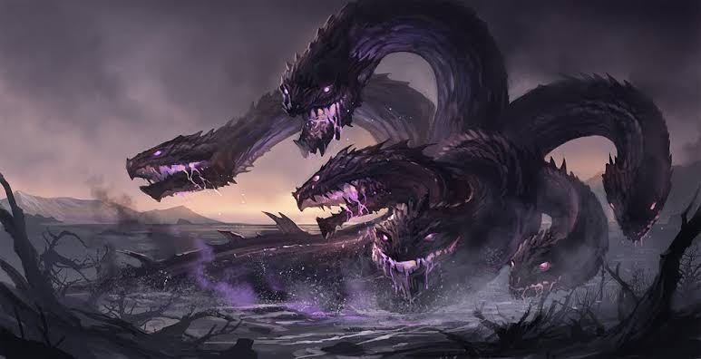

🐍 Кто такая Гидра?
Гидра — одно из самых известных чудовищ древнегреческой мифологии. Её изображают как огромную змею или дракона с несколькими головами. Самой известной считается Лернейская гидра. Она жила возле болота и внушала страх всем, кто приближался к её логову.
✨ Внешний вид
- 🐍 Несколько змеиных голов.
- 👁️ Светящиеся глаза.
- 🛡️ Толстая прочная чешуя.
- 🐉 Длинный мощный хвост.
- 💚 Зелёная или тёмная окраска.
🌍 Где живёт?
По легендам гидра обитала возле болот, рек и озёр. Она скрывалась среди густых зарослей и редко покидала своё убежище.
⭐ Способности
- 🐍 Имеет несколько голов.
- ✨ Очень сильная.
- 🛡️ Прочная чешуя защищает от врагов.
- 💪 Огромная физическая сила.
- ⚡ Быстро двигается.
- 👀 Отлично чувствует приближение опасности.
📜 История
Согласно древнегреческим мифам, одним из самых известных подвигов героя Геракла стала победа над Лернейской гидрой. Эта история стала одной из самых известных легенд Древней Греции.
📖 Интересные факты
- 📚 Гидра — одно из самых известных чудовищ мифологии.
- 🎮 Она встречается во многих играх и фильмах.
- 🐍 Её образ вдохновил множество писателей и художников.
- 🏛️ История о гидре известна уже тысячи лет.
- ✨ Она считается символом огромной силы.
💡 Заключение
Гидра остаётся одним из самых известных мифических существ. Её образ до сих пор встречается в книгах, фильмах, играх и легендах, вдохновляя любителей мифологии по всему миру.